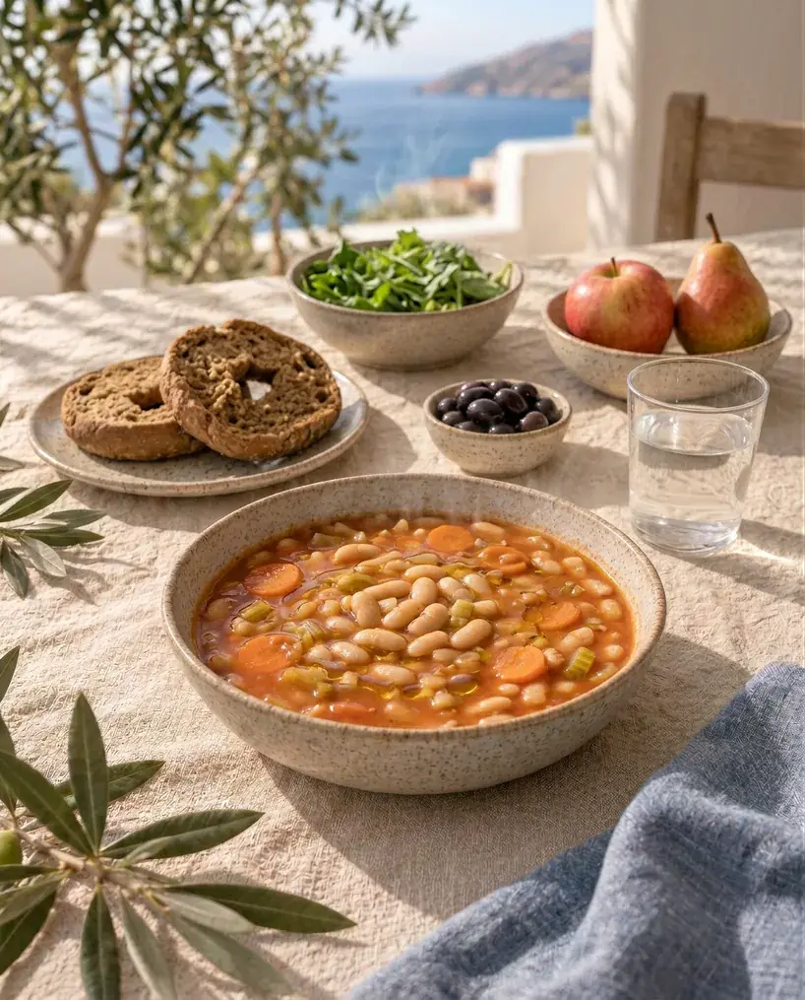
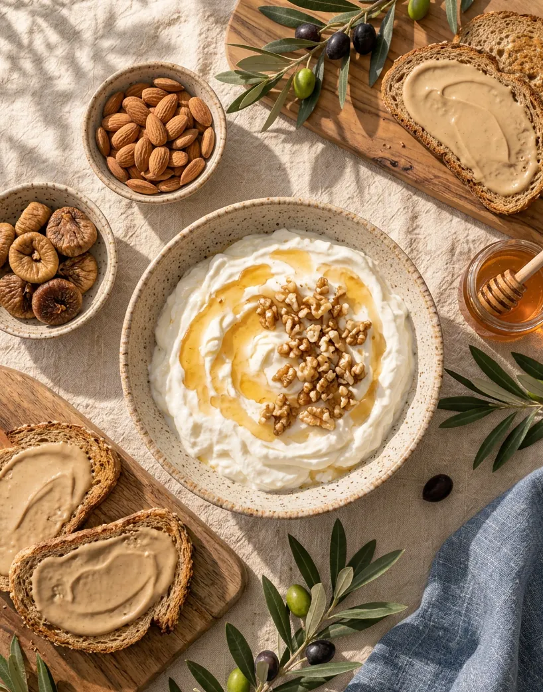
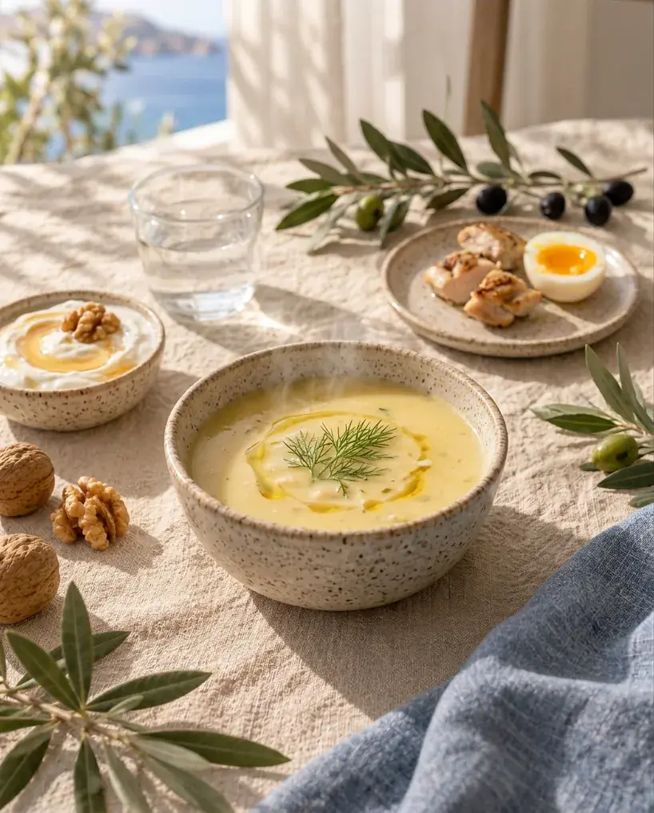

Άρθρα
Διατροφή χωρίς μύθους
Απαντήσεις στις ερωτήσεις που ακούω πιο συχνά από τους ανθρώπους που με εμπιστεύονται, γραμμένες με απλά λόγια.
 Νηστεία
ΝηστείαΝηστεία χωρίς στερήσεις: τι βάζω στο πιάτο
Η νηστεία φέρνει περισσότερα λαχανικά και όσπρια στο τραπέζι. Πώς καλύπτετε πρωτεΐνη, ασβέστιο και σίδηρο, με ιδέες για νηστίσιμα πιάτα και μια νηστίσιμη μέρα.
 Γιορτές
ΓιορτέςΓιορτές χωρίς ενοχές και χωρίς δίαιτα από τον Γενάρη
Πώς να χαρείτε το γιορτινό τραπέζι χωρίς φαγοπότι και χωρίς τιμωρία μετά: τι κάνετε πριν, στο τραπέζι, με τα γλυκά, με το «φάε λίγο ακόμα» και την επόμενη μέρα.
 Διαβήτης τύπου 2
Διαβήτης τύπου 2Διαβήτης τύπου 2: τι βάζω στο πιάτο χωρίς να φοβάμαι τους υδατάνθρακες
Με διαβήτη τύπου 2 δεν χρειάζεται να κόψετε το ψωμί ή τα φρούτα. Πώς στήνετε το πιάτο, τι κοιτάτε στο σούπερ μάρκετ και πώς τρώτε έξω χωρίς άγχος.
 Οστεοπόρωση
ΟστεοπόρωσηΓερά οστά σε κάθε ηλικία: ασβέστιο, πρωτεΐνη και κίνηση
Τι χρειάζονται τα οστά σε άντρες και γυναίκες: ασβέστιο από τη διατροφή, ακόμα και χωρίς γαλακτοκομικά, πρωτεΐνη, βιταμίνη D, άσκηση και πρόληψη των πτώσεων.
 Βάρος και υγεία
Βάρος και υγείαΟι εξετάσεις μου είναι καλές. Χρειάζεται να αλλάξω κάτι;
Καλές εξετάσεις με περισσότερα κιλά: τι σημαίνει «μεταβολικά υγιής παχυσαρκία», γιατί καλές εξετάσεις σήμερα δεν σημαίνουν χωρίς κίνδυνο αύριο και τι αξίζει να κάνετε, χωρίς να κυνηγάτε έναν αριθμό.

ΠροδιαβήτηςΠροδιαβήτης: τι αλλάζω για να μειώσω τον κίνδυνο για διαβήτη
Τι σημαίνει ο προδιαβήτης, ποιες εξετάσεις τον δείχνουν και ποιες αλλαγές στο φαγητό και στην κίνηση μειώνουν τον κίνδυνο να γίνει διαβήτης.
 Ινσουλινοαντίσταση
ΙνσουλινοαντίστασηΙνσουλινοαντίσταση: τι τρώω χωρίς να κόψω το ψωμί
Τι είναι η ινσουλινοαντίσταση με απλά λόγια, γιατί δεν χρειάζεται να κόψετε το ψωμί και πέντε αλλαγές στο πιάτο για την πρώτη εβδομάδα.
 PCOS / PMOS
PCOS / PMOSΣύνδρομο πολυκυστικών ωοθηκών: υπάρχει ειδική δίαιτα;
Χωρίς γλουτένη, χωρίς γαλακτοκομικά, keto; Τι ισχύει για τη διατροφή στο σύνδρομο πολυκυστικών ωοθηκών, τι σημαίνει το νέο όνομα PMOS και τι βοηθάει στην πράξη.
 Σύσταση σώματος
Σύσταση σώματοςΗ ζυγαριά δεν ξέρει από τι είστε φτιαγμένοι
Τι σημαίνει κάθε τιμή της μέτρησης σύστασης σώματος: λίπος, μυϊκή μάζα, σπλαχνικό λίπος, νερό του σώματος. Τι δείχνει, τι δεν δείχνει, πώς προετοιμάζεστε και πώς διαβάζουμε τις αλλαγές.
 Θυρεοειδής
ΘυρεοειδήςΘυρεοειδής και διατροφή: πρέπει να κόψω το μπρόκολο και τη γλουτένη;
Υποθυρεοειδισμός και θυρεοειδίτιδα Hashimoto: τι ισχύει για τη γλουτένη, τα σταυρανθή λαχανικά, το ιώδιο και το βάρος, χωρίς περιττές απαγορεύσεις.
 Εμμηνόπαυση
ΕμμηνόπαυσηΕμμηνόπαυση: τι αλλάζει στο σώμα και τι βάζω στο πιάτο
Μετά την εμμηνόπαυση οι μύες και τα οστά χρειάζονται περισσότερη φροντίδα. Πόση πρωτεΐνη, πόσο ασβέστιο και ποια κίνηση βοηθούν, με παραδείγματα από το ελληνικό τραπέζι.
 Χοληστερίνη
ΧοληστερίνηΧοληστερίνη: ποια λιπαρά αλλάζω και ποια κρατάω
Για τη χοληστερίνη δεν χρειάζεται να κόψετε το λίπος. Ποια λιπαρά αλλάζετε, πού κρύβονται τα κορεσμένα, τι ισχύει για τα αυγά και τι βοηθάει τα τριγλυκερίδια.

Αύξηση βάρουςΘέλω να πάρω κιλά: πώς, χωρίς να τρώω ό,τι βρω
Πώς να πάρετε κιλά όταν η όρεξη είναι λίγη ή χορταίνετε γρήγορα: μικρότερα και πιο συχνά γεύματα, τρόφιμα με ενέργεια και θρεπτικά συστατικά, πρωτεΐνη και ενδυνάμωση.

Αγωγή GLP-1Όταν η όρεξη χάνεται: πώς τρώω με αγωγή GLP-1
Με την αγωγή GLP-1 τρώτε λιγότερο. Πώς παίρνετε αρκετή πρωτεΐνη και προστατεύετε τους μύες σας, τι βοηθάει στη ναυτία και τη δυσκοιλιότητα και τι να περιμένετε αν αλλάξει η αγωγή.
 Ευερέθιστο έντερο
Ευερέθιστο έντεροΕυερέθιστο έντερο: τι είναι η δίαιτα low FODMAP και γιατί ο αυστηρός περιορισμός δεν κρατάει για πάντα
Φούσκωμα, πόνος, διάρροια ή δυσκοιλιότητα; Τι είναι η δίαιτα low FODMAP, ποιες είναι οι τρεις φάσεις της και γιατί η αυστηρή φάση δεν πρέπει να μείνει για πάντα.